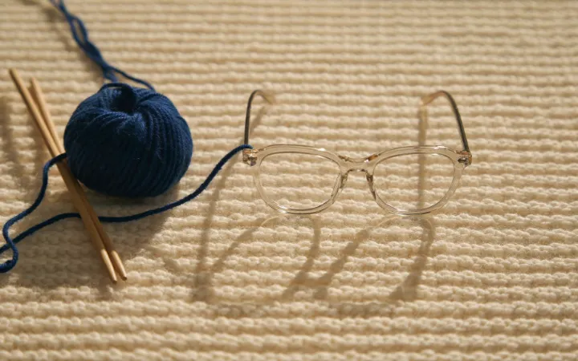

What’s New
Keep up-to-date on the latest vision-related news and eye care events in our Practice.
What’s New

Back to School: Is Your Child Really Seeing Everything They Need to Learn?
Children may not realize their vision is blurry or uncomfortable. Back-to-school season is a useful time to watch for subtle signs of nearsightedness, focusing difficulties, and other vision concerns that can affect classroom comfort.
Read More
Your Child’s Prescription Keeps Getting Stronger—What Happens Next?
A stronger glasses prescription can restore clear vision, but it does not necessarily slow the underlying progression of childhood myopia. Modern myopia management focuses on controlling excessive eye growth and protecting long-term eye health.
Read More
Your Summer Sunglasses Should Do More Than Look Good
The best summer sunglasses should do more than look good. Thoughtful frame fit, reliable UV protection, polarization, and prescription options can help you enjoy bright days with clearer, more comfortable vision.
Read MoreHeadaches, Tired Eyes & Neck Pain: Could Your Eyes Be Working Too Hard?
A correct glasses prescription does not always eliminate visual strain. Small binocular misalignments can force the visual system to work harder, contributing to headaches, eye fatigue, and neck or shoulder tension in some patients.
Read MoreWhen Eye Drops Aren’t Enough: A More Advanced Approach to Chronic Dry Eye
When dry eye symptoms return despite drops and warm compresses, the problem may involve meibomian gland dysfunction, inflammation, or tear-film instability. Advanced dry-eye care focuses on identifying and treating those underlying drivers.
Read MoreWomen’s Eye Health: Why Your Vision and Eye Comfort Can Change Over Time
Women may experience changes in eye comfort and vision throughout adulthood. Understanding the connections between hormones, dry eye, presbyopia, medications, and eye disease risk can help you know when to seek care.
Read MoreLove Your Look: Why One Pair of Glasses Doesn’t Have to Do Everything
One pair of glasses does not have to handle every task, outfit, and environment. A thoughtful eyewear wardrobe can improve visual comfort while giving you more freedom to express your style.
Read MoreBeyond 20/20: What Your Eye Exam Can Reveal About Your Eye Health
Clear eyesight does not always mean healthy eyes. A comprehensive eye exam evaluates the structures that protect your vision and can reveal subtle changes linked to glaucoma, macular degeneration, diabetic eye disease, cataracts, and other conditions.
Read MoreGainesville’s Winter Dry Eye Season Is Here: Let’s Fix It
Dry eye symptoms tend to spike in winter. Learn why and how York Eye Associates in Gainesville helps with tailored dry eye care and iLight therapy.
Read MoreOctober Eye Health Checklist: Contact Lens Safety & Vision Tips
October highlights two key eye health events — Contact Lens Safety Month and World Sight Day. At York Eye Associates, we help patients in Gainesville protect their vision through contact lens exams, hygiene education, and early detection.
Read MoreA Clear Outlook on Aging: Protecting Your Vision for the Years Ahead
Clear vision supports the life you love. Learn how proactive eye care, simple lifestyle habits, and expert exams at York Eye Associates help protect your vision and independence well into your senior years.
Read MoreStart the School Year with Clear Vision: Eye Exams and Eyewear
A new school year means more than new books and supplies—it’s also the perfect time to check your child’s vision. Discover how exams, glasses, and contact lenses keep kids seeing their best.
Read More
Finding Relief with Avulux Lenses for Migraine and Light Sensitivity
Struggling with light-triggered migraines? Discover how Avulux lenses provide real relief for photophobia. Clinically inspired, patient-tested comfort starts here.
Read MoreUnderstanding Myopia Management: A Guide for Parents
Myopia, or nearsightedness, is increasingly common. Discover the importance of early intervention and the effective treatments to manage myopia and protect your child’s vision health.
Read More
Arthritis & Dry Eye: Understanding the Connection and Finding Relief
Arthritis can lead to chronic dry eye due to inflammation and reduced tear production. Learn why this happens and explore treatment options for lasting relief.
Read MoreA Heartfelt Thank You from All of Us
As the holiday season approaches, we would like to take a moment to express our sincere gratitude to our loyal customers. Thank you for choosing York Eye Associates!
Read MoreDon’t Miss Out: Utilizing Your End-Year Benefits Wisely
Use your end-of-year insurance benefits before they expire with an eye exam, contact lens fitting, or designer eyewear for the whole family.
Read MoreExperts Warn of Rising Levels Of Myopia
Discover why experts say there’s a myopia epidemic, and learn what you can do to keep your kids’ eyes healthy. York Eye Associates proudly offers myopia management treatments to nearsighted children for healthy and clear life-long vision.
Read More
The Link Between High Myopia and Serious Eye Diseases
High myopia – severe nearsightedness – is associated with an increased risk of serious eye diseases such as retinal detachment, glaucoma, and cataracts.
Read More
Supplements That Slow AMD Progression
Aging comes with many blessings but also certain challenges. Having a higher risk of developing age-related macular degeneration (AMD) is one of them. Fortunately, a formulation of vitamins and minerals called AREDS2 may slow the progression of vision loss from AMD. We at York Eye Associates in Gainesville offer treatment for macular degeneration and other eye diseases.
Read MoreThe Importance of Regular Eye Exams in Detecting Macular Degeneration
Age-related macular degeneration (AMD) can cause severe vision loss, but early detection can help preserve your vision.
Read More
How Diabetes Increases Dry Eye Risk in Children and Adolescents
Children and adolescents with diabetes are significantly more likely to suffer from dry eye syndrome (DES) than their non-diabetic peers. Read on to learn why diabetics are at higher risk, and how York Eye Associates can help.
Read MoreProtect Your Eyes With These Contact Lens Safety Tips
It's Contact Lens Safety Month, which makes it the perfect time to brush up on ways to keep your eyes and vision healthy when wearing contact lenses. Here are our top contact lens safety tips to keep your peepers happy.
Read MoreChoosing the right sunglasses for UV protection
York Eye Associates emphasizes the importance of UV protection for your eyes. Discover why starting early with protective measures is crucial, what to look for in sunglasses, and the differences between polarized and normal lenses. We also offer prescription sunglasses to cater to your vision needs.
Read MoreChildhood Glaucoma: Here’s What You Need to Know
Glaucoma in children is rare, but when it occurs, it must be treated with surgery to prevent vision loss. Read on to learn more about congenital glaucoma symptoms and treatments.
Read MoreAMD Progression: Supplements that Can Slow It Down
AREDS2 can slow macular degeneration’s progression, preserving vision and reducing the risk of serious complications.
Read More
What’s The Connection Between Dry Eye And Asthma?
Studies have found a correlation between asthma and dry eye syndrome. Fortunately, a dry eye optometrist can help by treating your uncomfortable dry eye symptoms.
Read More